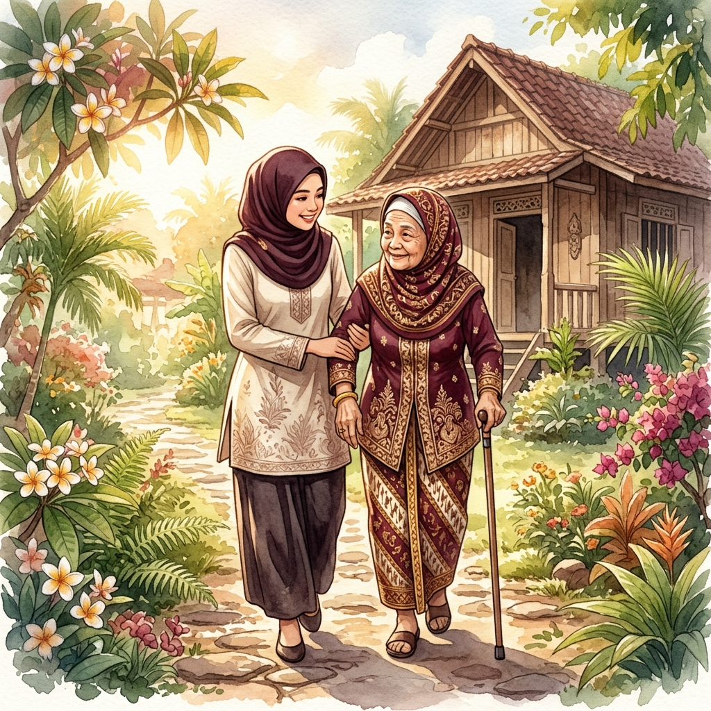

Sistem pemetaan prioritas bantuan lansia berbasis statistika untuk mewujudkan kepedulian sosial yang lebih tepat sasaran.

Platform digital yang mengintegrasikan data demografis, kesehatan, dan ekonomi untuk mengidentifikasi lansia yang paling membutuhkan bantuan — sehingga setiap sumber daya tersalurkan dengan tepat.
Memetakan kerentanan lansia menggunakan analisis statistik multivariat. Data demografi, kesehatan, dan sosial-ekonomi diolah menjadi indeks risiko yang akurat dan terukur.
Menentukan prioritas distribusi bantuan secara efektif berdasarkan skor risiko. Lansia dengan kebutuhan mendesak mendapat perhatian dan sumber daya lebih dahulu.
Menghubungkan relawan dengan lansia yang membutuhkan pendampingan. Membangun jejaring solidaritas sosial berbasis data untuk Indonesia yang lebih peduli.
Empat langkah sederhana untuk memastikan bantuan sampai kepada lansia yang paling membutuhkan.
Data lansia didaftarkan oleh keluarga, relawan, atau petugas kelurahan melalui formulir digital yang komprehensif.
Sistem menghitung skor risiko berdasarkan usia, kondisi kesehatan, status ekonomi, dan faktor sosial lainnya secara otomatis.
Berdasarkan skor risiko, sistem menentukan level prioritas — tinggi, menengah, atau rendah — untuk alokasi sumber daya.
Relawan ditugaskan untuk mendampingi lansia prioritas. Kunjungan rutin dan bantuan tersalurkan secara terstruktur.
Bersama-sama kita telah menghadirkan perubahan nyata bagi para lansia di seluruh kota.
Distribusi tingkat risiko lansia yang terdata dalam sistem kami berdasarkan analisis multivariat terbaru.
Cerita nyata dari keluarga, relawan, dan pemangku kepentingan yang merasakan dampak langsung dari Sahabat Lansia.
Sejak Ibu saya terdaftar di Sahabat Lansia, kami merasakan perubahan besar. Relawan rutin datang memeriksa kesehatan Ibu, dan kami mendapat bantuan yang tepat sasaran. Terima kasih telah memberi kami ketenangan.
Menjadi relawan di Sahabat Lansia adalah pengalaman paling bermakna. Sistem skoringnya membantu saya tahu siapa yang paling membutuhkan. Setiap kunjungan terasa berarti, dan senyum mereka adalah hadiah terbesar.
Pendekatan berbasis data ini sangat membantu kami dalam mengalokasikan anggaran sosial. Sahabat Lansia memberikan gambaran jelas tentang kebutuhan lansia di wilayah kami sehingga kebijakan lebih efektif dan tepat guna.
Setiap tangan yang terulur membawa harapan baru. Daftarkan lansia di sekitar Anda atau jadilah relawan untuk membuat perbedaan nyata.